+
Projects
+
Selected Works
ESHETE WOLDEYILMA
Regally draped in blanket and cloth, Eshete Woldeyilma is a patchwork king. I didn’t meet Eshete until 2013, when I stopped him in the middle of the street and asked to take his photograph. After developing the roll of film, I was immediately dissatisfied by how detached and impersonal the images were, and how I appeared to be nothing more than an onlooker. Shortly after this encounter, I put aside my presumptions and began to ask him questions. I learned that Eshete fled Ethiopia in 1997, and that he used to have an apartment on Columbia Street until he was evicted in 2010. Eshete—who, contrary to popular belief, is not actually homeless—journeys to Brooklyn each and every day to feed and nurture his fourteen “stray” cats.
I met Eshete at a time when I was struggling to see a community of people around me with stories similar to those of my family. After we met, I immediately wanted to continue using photography to examine Eshete’s relationship to our neighborhood in hopes of defining “community.” Since then, I’ve been following Eshete’s movements with the seasons and photographing him in his nook on Columbia Street, where the concrete meets the New York harbor, and rusty cranes loom heavy in the sky.
My conversations with Eshete can often be repetitive as we discuss the changing neighborhood, with its old-timers passing away, and the mom and pop shops closing, but, regardless, my visits have lasted longer, and I have photographed him more closely, and more candidly. I believe that when you draw, paint, or photograph an individual, you are not capturing their form, but their energy. By candidly photographing Eshete, I am refusing to curate his existence or impose my views upon his story.
Eshete is far from my inborn ideas of “regularity,” but now I’m able to appreciate his uniqueness; it’s of a type rarely found in my neighborhood. His ostracization has worn away at his English, and so I’ve found ways to use photography to bridge that gap. If we can’t understand each other, I’ll just photograph him. As I’ve continued to document his story, the lens has allowed me to foster a friendship that I wouldn’t otherwise have had access to, and, as a result, I’ve finally created the images I couldn’t find back in 2013.
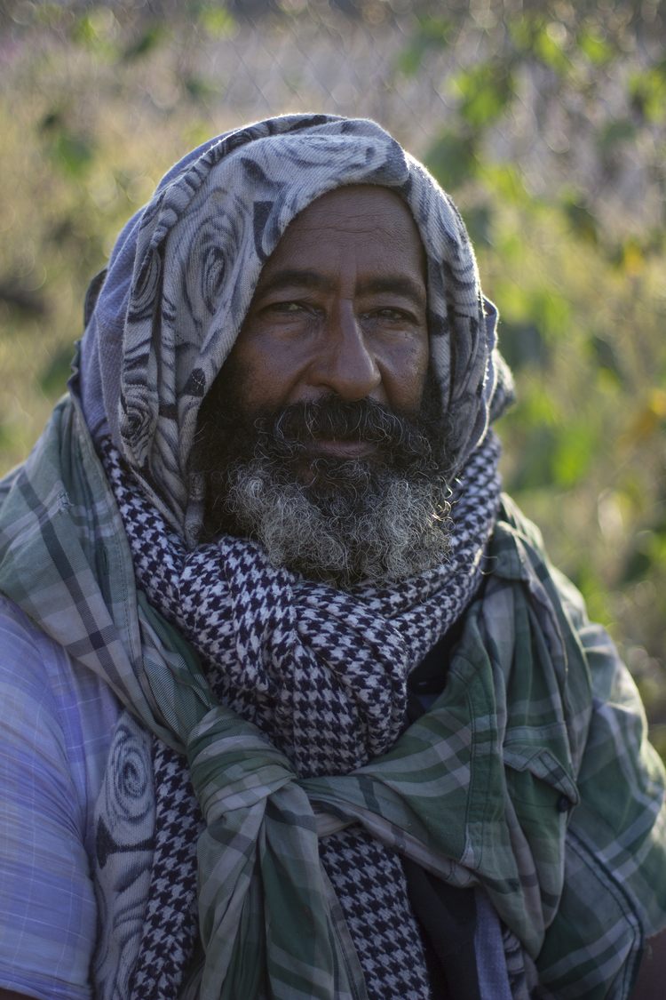
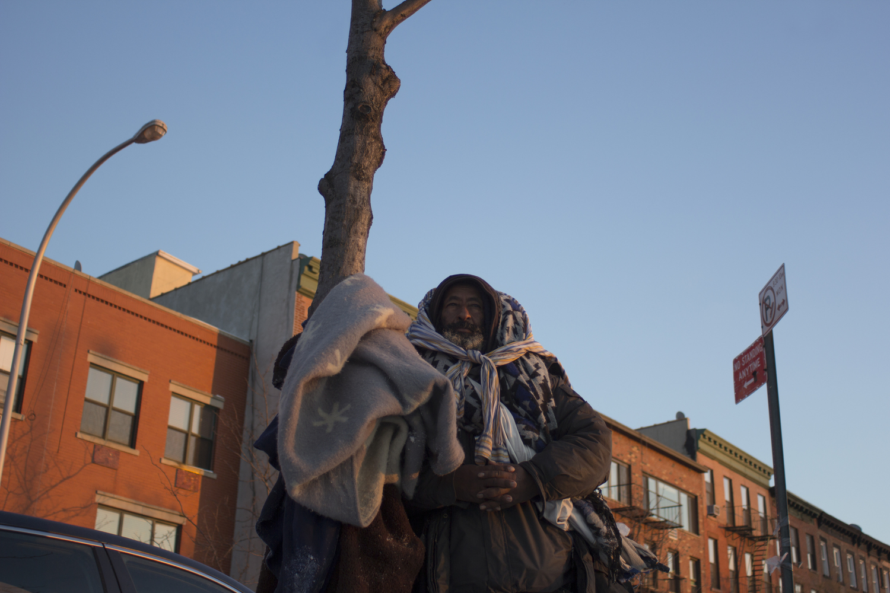
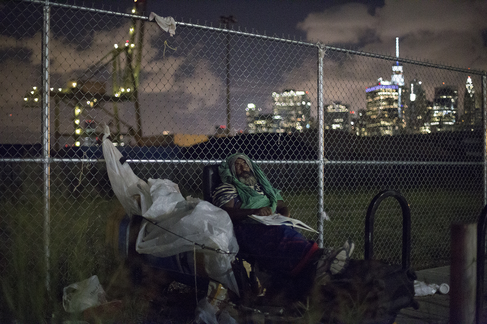
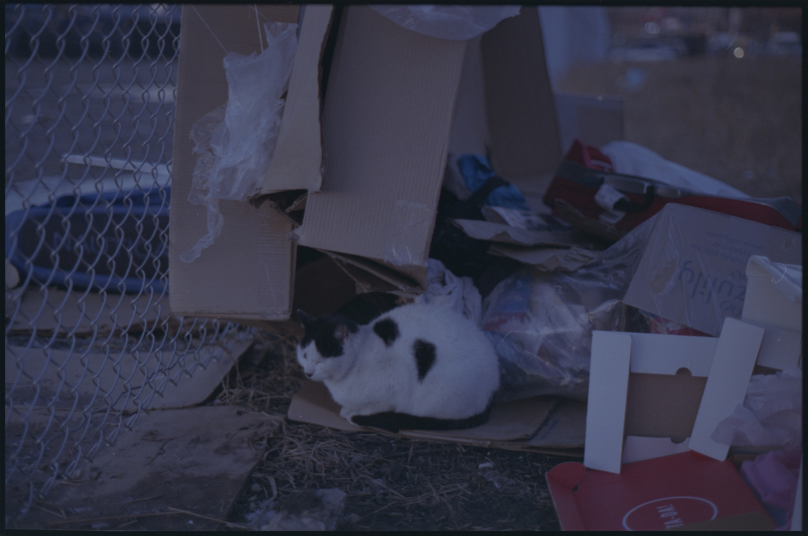
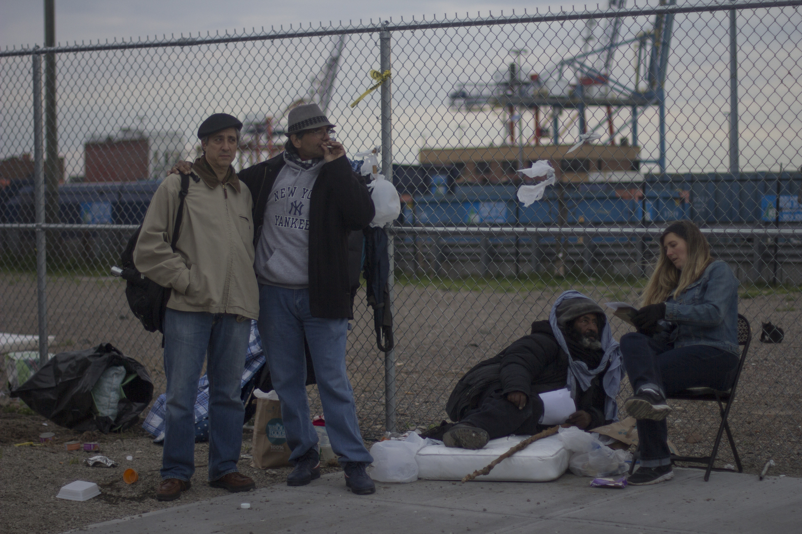
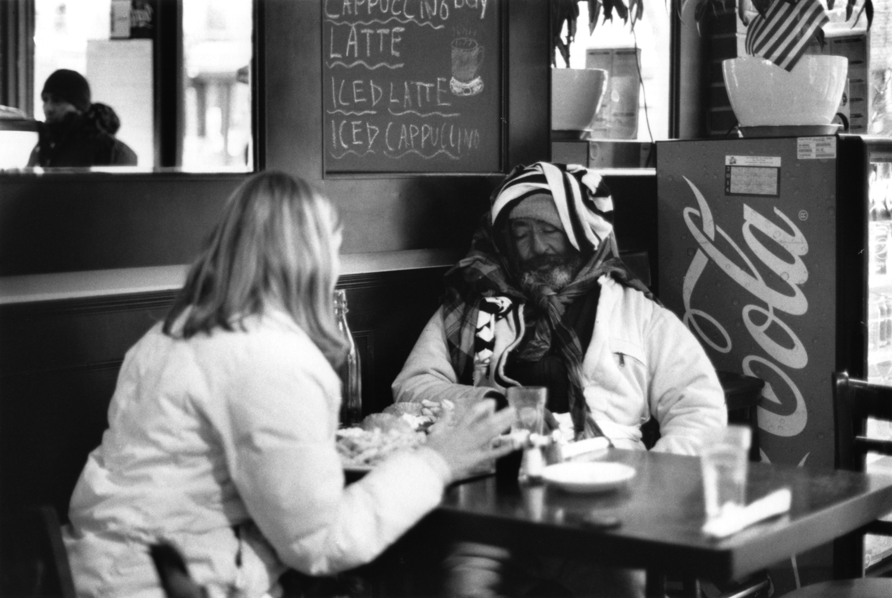
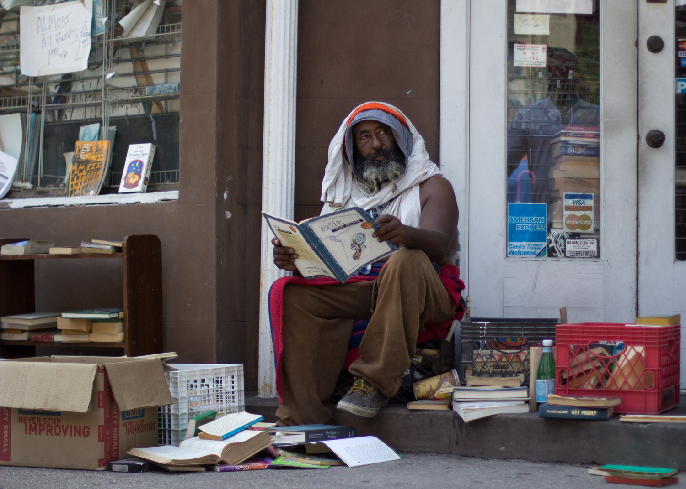
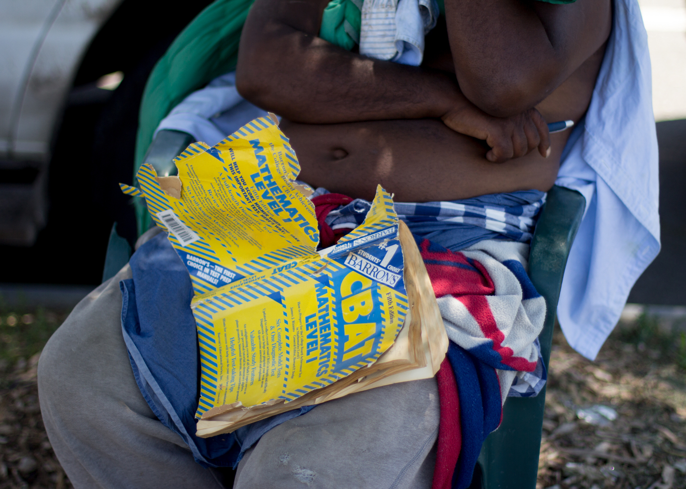
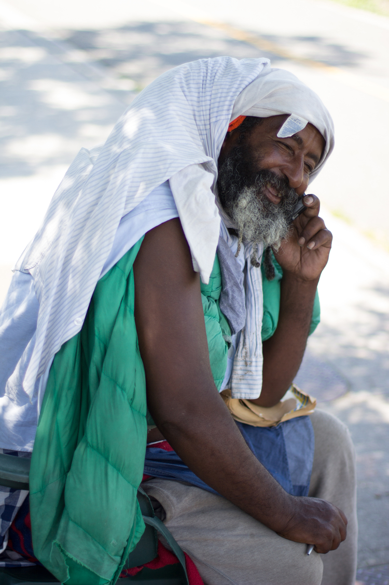
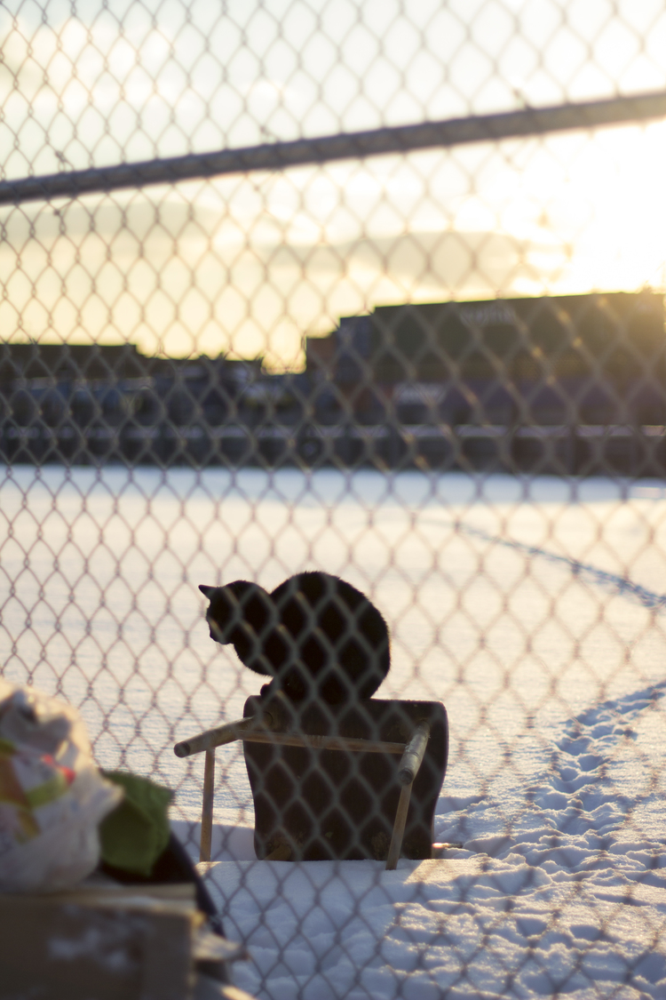
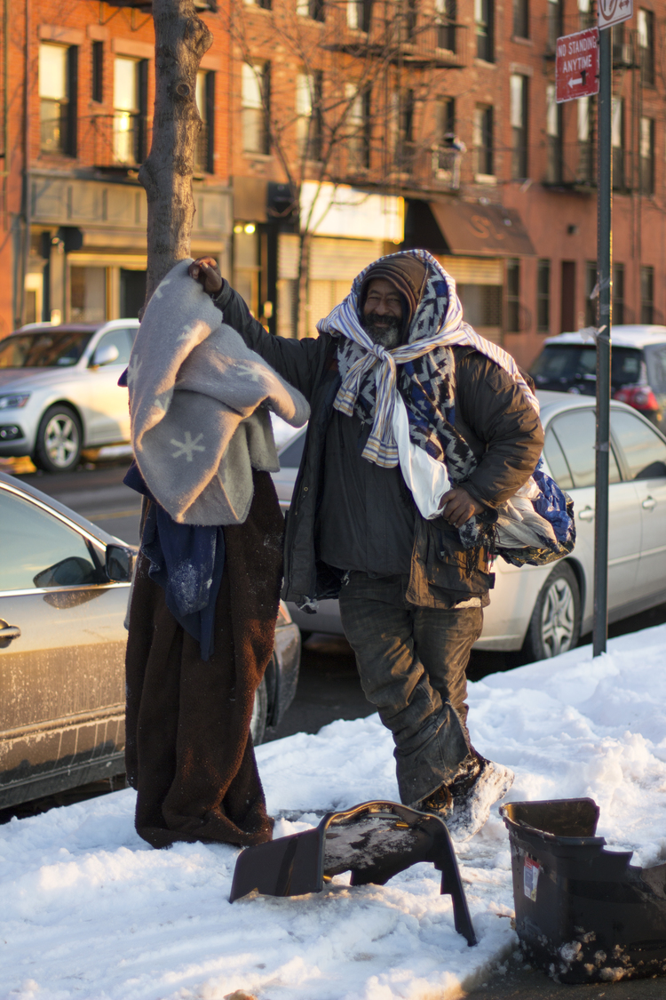
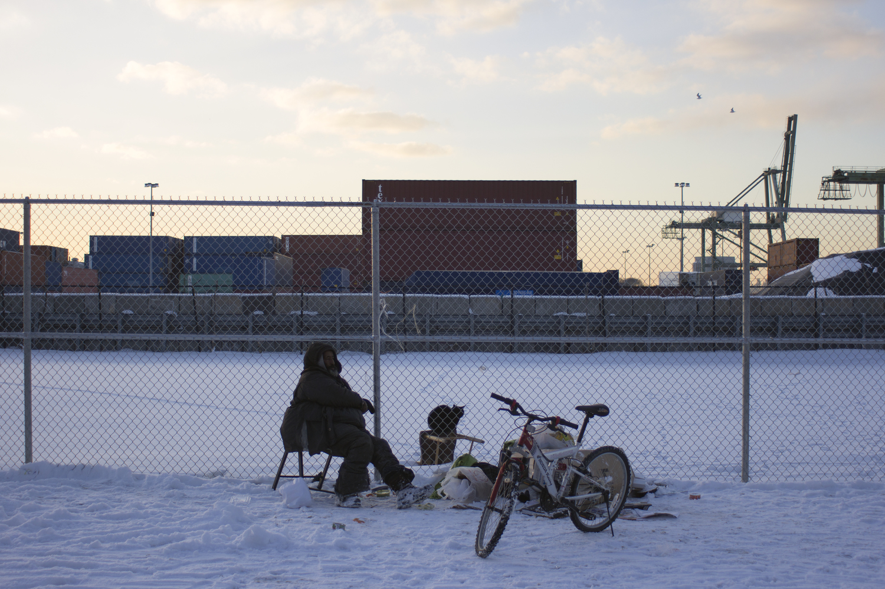
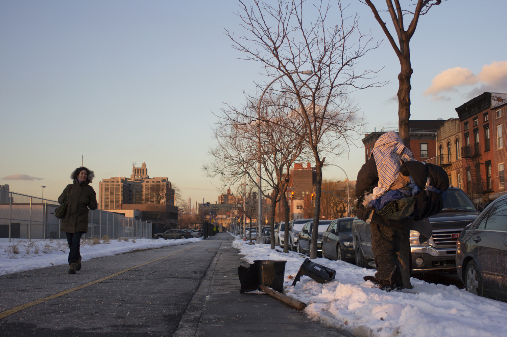